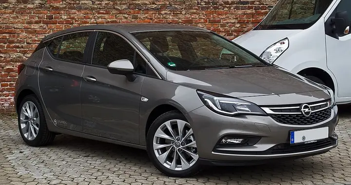
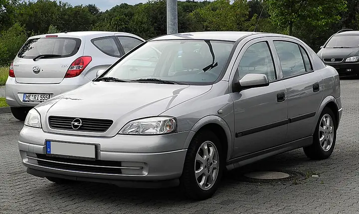
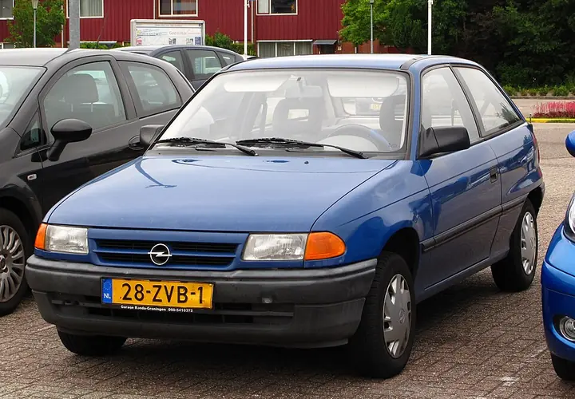

Opel Astra
Sixth generation (Astra L – C02; 2021) · 2021–present
Abstract
This generation of the Opel Astra was built November 2021–present in Germany: Rüsselsheim. Body styles: 5-door hatchback, 5-door station wagon. Designed by Niels Loeb, Ilka Höbermann (color and trim designer).


1Specifications
| Production | November 2021–present |
|---|---|
| Assembly | Germany: Rüsselsheim |
| Designer | Niels LoebIlka Höbermann (color and trim designer) |
| Body style | 5-door hatchback5-door station wagon |
| Platform | PSA EMP2 platform |
| Engine | Petrol:1.2 L EB2ADT/EB2DTS turbo I3Petrol Mild Hybrid: 1.2 L EB2LTEDH2 turbo I3Petrol PHEV:1.6 L EP6FDT turbo I4Diesel:1.5 L DV5 BlueHDi turbo I4 |
| Electric motor | Synchronous Electric Motor (Astra Plug-in Hybrid) |
| Transmission | 6-speed manual6 speed e-DCT (MHEV)8-speed automatic |
| Battery | 0.43 kWh (Hybrid)12.3 kWh (Plug-in Hybrid) (2022-2025)17.2 kWh (Plug-in Hybrid) (2025-present) |
| Wheelbase | 2675 mm (hatchback)2730 mm (station wagon) |
| Length | 4374 mm (hatchback)4640 mm (station wagon) |
| Width | 1860 mm |
| Height | 1441 mm |
| Also called | Vauxhall Astra (United Kingdom) |
| Related | DS No. 4Peugeot 308 IIIPeugeot 408 |
2Versions
- Electric
- Facelift (2026)
3Previous generations

_%E2%80%93_Frontansicht,_13._Oktober_2015,_D%C3%BCsseldorf.jpg){kind=link}

_%E2%80%93_Frontansicht_(1),_14._August_2011,_Heiligenhaus.jpg){kind=link}

_%E2%80%93_Frontansicht,_21._Juni_2011,_Heiligenhaus.jpg){kind=link}


4Generation by generation
Length +8% from the first to the last
Astra F – T91 19914,050 mm
Astra G – T98 19984,110 mm
Astra H – A04 20044,249 mm
Astra J – P09 20094,419 mm
Astra K – B15 20154,370 mm
Astra L – C02 20214,374 mm